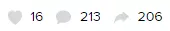

May-akda
mataAnita

Pendapat Dokter Spesialis Mata
Mga Kuwento • 15 minutong pagbasa


Pada kesempatan kali ini, saya akan mengupas tentang segala hal tentang mata. Menurut American Academy of Ophthalmology, gangguan pada mata diseluruh penjuru dunia masih menjadi masalah kesehatan mayor. Karena mata adalah jendela dunia yang mana jika mata tersebut mengalami kerusakan maka sangat berdampak tidak hanya pada fisik namun juga psikis penderita.
Angka penyakit pada mata sampai hari ini menurut masih begitu tinggi, dibuktikan menurut Perdami (Perhimpunan Dokter Spesialis Mata Indonesia) angka gangguan penglihatan di Indonesia sampai tahun 2017 mencapai 8 juta jiwa yaitu 1,6 juta jiwa mengalami kebutaan dan 6,4 juta jiwa mengalami gangguan mata ringan sampai berat.

Namun gangguan pada mata bukan hanya disebabkan oleh 2 penyakit diatas, namun paling sering akibat gaya hidup masyarakat terutama di negara maju yang serba canggih. Penggunaan smartphone, komputer, laptop, tv jangka panjang dapat menyebabkan gangguan pada media refraksi pada mata. Kompensasinya adalah TIO (Tekanan Intra Okular) mengalami peningkatan pada mata akibat penggunaan layar yang jangka panjang tersebut. Akibat dari radiasi cahaya yang terus menerus menginvasi ke mata menyebabkan gangguan pada media refraks
Mengapa demikian? karena 6 otot sirkuler pada mata setiap harinya dipaksa untuk memfokuskan bayangan ke retina. Akhirnya semakin lama keadaan bola mata akan semakin lonjong sehingga bayangan yang jatuh ke retina tidak menjadi tepat. Mata yang tidak dapat memfokuskan bayangan tepat jatuh di bawah retina akan memaksa mata untuk tetap fokus sehingga sering mengalami yang disebut mata malas (lazy eye) Hal ini didukung dengan banyak sekali anak-anak di jaman sekarang yang sudah menggunakan kacamata akibat miopia ataupun ambliopia.
Menurut statistik WHO, jumlah orang dengan masalah penglihatan telah meningkat secara signifikan dalam beberapa tahun terakhir di semua negara maju. Jika tidak dilakukan tindakan, lebih dari 70% penduduk Indonesia akan mengalami gangguan penglihatan dalam satu dekade mendatang.
Matamu butuh bantuan!
Berdasarkan tingginya angka gangguan penglihatan pada mata di indonesia, maka lebih dari 8 juta masyarakat di Indonesia sampai hari ini membutuhkan pertolongan untuk mengobati gangguan penglihatan yang mereka alami. Penanggulangan dari gangguan penglihatan sendiri adalah menggunakan kacamata sehari-hari untuk membantu memfokuskan bayangan ke retina.
Solusi selain penggunaan kacamata !!!
Ketika saya mengikuti suatu perkumpulan dokter mata, saya diperkenalkan dengan kapsul mata yaitu xVision. Ternyata produk ini dibuat di laboratorium modern di Jerman dan mengandung tumbuhan dan ekstrak yang tidak biasa dalam formulanya, kemudian saya rekomendasikan kepada pasien saya.
Banyak pasien saya yang sebelumnya harus dioperasi matanya karena mata minus (miopia) setelah mengonsumsi xVision dan saya cek kembali ternyata penglihatan menjadi pulih dan baik. Awalnya saya hanya mencoba ke beberapa pasien saya di Poli mata namun sekarang seluruh pasien saya, saya rekomendasikan untuk mencoba kapsul xVision ini. 8 dari 10 pasien saya mengatakan bahwa setelah mengonsumsi xVision penglihatan menjadi kembali normal.
Setelah saya pelajari kembali ternyata xVision mengandung lutein. Pertanyaannya apa itu lutein? Lutein adalah sejenis pigmen organik yang disebut karotenoid, yang ditemukan dalam mata manusia. Bagian mata ini bertanggung jawab atas ketajaman visual. Senyawa ini memiliki fungsi sebagai filter cahaya, yaitu melindungi selaput mata dari cahaya matahari langsung. Suplemen yang mengandung lutein dapat memperlambat terjadinya katarak akibat proses penuaan. Jadi ketika saya mengetahui bahwa Lutein adalah salah satu bahan utama xVision, saya menyadari bahwa produk ini benar-benar dapat melindungi orang dari kerusakan penglihatan bahkan kehilangan penglihatan.
xVision
Bersertifikat di Indonesia.
xVision diluncurkan pada konferensi tahun lalu, dan saya ingat berpikir dalam hati, "Apakah ini akan tersedia di negara ini?" Namun yang mengejutkan saya, suplemen tersebut tersertifikasi untuk pasar Indonesia dan dijual dengan harga murah! Satu-satunya masalah adalah xVision tidak dijual di apotek, tetapi saya berhasil menemukan situs web resmi perusahaan yang mendistribusikan obat ini.
Saya seorang dokter mata dan saya highly recommended xVision untuk para pasien mata di Indonesia.

15 komento
mag-iwan ng iyong komento
laginghanda
/ 19.01.2023
Umuunlad ba ang sistema natin sa pangangalaga ng kalusugan? Ginagamot pa rin ang lagnat gamit ang buhay na uling.
maganda_ako
/ 19.01.2023
Kumusta, Anita? Naaalala mo ba ako? Pasyente mo ako, at pinayuhan mo akong subukan ang Crystalix . Ginamit ko ito nang 3 linggo at nawala ang matinding sakit sa mga mata ko. Maraming maraming salamat!
benjie_soledad
/ 19.01.2023
Pwede rin ba akong magpatingin? Hindi na tula ng dati ang mga mata ko dahil maraming oras akong nasa computer
maganda_ako
/ 23.01.2023
Masasabi ko mula sa personal kong karanasan, ang Crystalix ay isang mahusay na produkto! Subukan mo ito. Mabibili ito kahit walang reseta sa website na ito
benjie_soledad
/ 26.01.2023
Ginamit ko ang suplementong ito. Mahusay ito. Lahat na sa opisina ay gumagamit nito
Sally Gonzales
/ 25.01.2023
Salamat sa iyong payo, wala akong ideya na mayroon palang ganyang bagay
IRWIN_MORALES
/ 25.01.2023
Isang buwan ko itong ginamit, at mas maayos na ang pakiramdam ko ngayon!
Patrick Waje
/ 25.01.2023
Ako at ang asawa ko ay mga tagadisenyo ng UI/UX at humihina ang aming paningin sa nakalulungkot na bilis. Bumili kami ng suplementong ito at nakatulong ito sa amin nang malaki. Sulit ang produktong ito.
Sophia Juarez
/ 25.01.2023
Gusto kong subukan ito
PAHAYAGANNGAYON
/ 25.01.2023
Kumusta?
Kasama ang iyong entri sa nangungunang 25 na popular na entri sa PahayaganNgayon. Makakakita ka ng higit na impormasyon tungkol sa pag-rate sa seksiyon ng Tulong
MIGZ_P
/ 25.01.2023
Grabe, mukhang ayos! Pwede mo bang ibahagi ang link papunta sa website na iyon?
MEME_B
/ 25.01.2023
May limang ganoon - HETO
MAMABETH
/ 26.01.2023
May mga katulad bang lokal na produkto?
TNT
/ 26.01.2023
Kung ako sa iyo, hindi na ako tataya sa mga produktong ganoon.
OTSOOTSO
/ 26.01.2023
Sang-ayon ako. Lagi namang pinakamahusay kapag orihinal na produkto. Gamitin mo ang Crystalix , gumagana ito. Ito ang ginagamit ko ngayon.